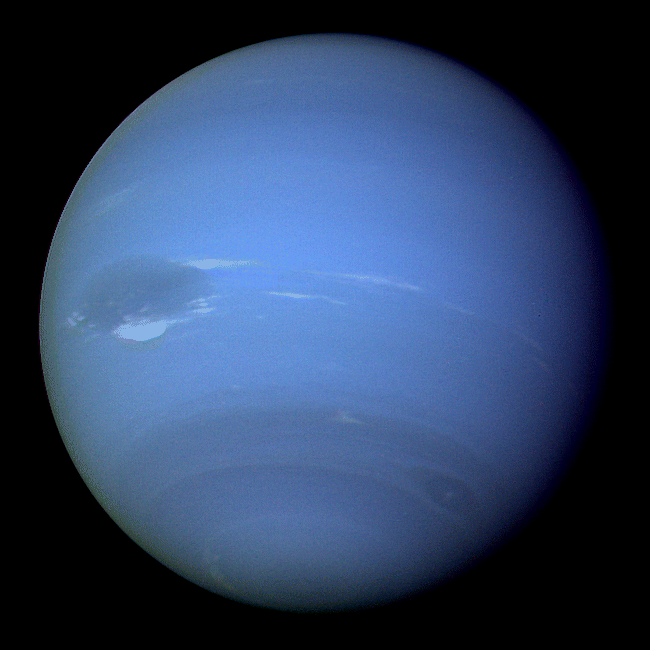

Neptune is the eighth planet from the Sun and the farthest known planet in the Solar System. It is the fourth-largest planet in the Solar System by diameter, the third-most-massive planet, and the densest giant planet. It is 17 times the mass of Earth, and slightly more massive than its near-twin Uranus. Neptune is denser and physically smaller than Uranus because its greater mass causes more gravitational compression of its atmosphere. It is referred to as one of the solar system's two ice giant planets (the other one being Uranus). Being composed primarily of gases and liquids, it has no well-defined "solid surface". The planet orbits the Sun once every 164.8 years at an average distance of 30.1 AU (4.5 billion km; 2.8 billion mi). It is named after the Roman god of the sea and has the astronomical symbol ♆, representing Neptune's trident.Back to home